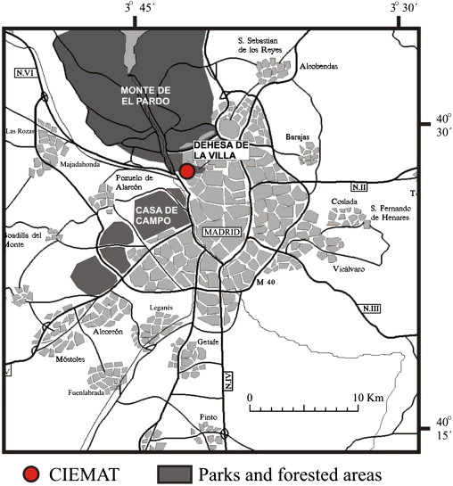
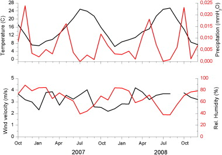

Influence of seasonal factors on the atmospheric particle number concentration and size distribution in Madrid
Abstract
The ambient particle number concentration and size distribution have been measured in an urban background site in Madrid, a continental Mediterranean area, over more than two years (Oct 2006–Dec 2008). The objective was to study the sources and processes affecting or contributing to fine and ultrafine particles in this area. They have been measured with a TSI–SMPS (15–600 nm) instrument and with a modified Vienna type DMA (3–80 nm) and a CPC 3025 (TSI) during 6 months. The average particle number concentration was lower than in other sites as it is an urban background site and because of its location in the Mediterranean area. The particle number concentrations have shown a clear seasonal influence: maximum values were observed every year in the period November–January, coinciding with atmospheric stagnant conditions and pollution episodes, while minimum values were measured in springtime, a period in which wind speed produced high atmospheric dilution. The Aitken and accumulation modes have shown similar seasonal behavior, with two maxima related to vehicle emissions. The nucleation mode had a third maximum observed at noon during spring and summer. The size distributions were bimodal during most of the time: the first mode was centered on 20–50 nm and was associated with fresh particles related to vehicle exhaust emission; the second mode, between 50 and 160 nm, mainly corresponded to the evolution of the first mode. The evolution of the size distributions reveals a marked annual cycle related to the season, with an increase of median diameters during summer and a decrease during winter. Different evolutions of particle size distribution corresponding to different meteorological and seasonal scenarios were identified. The influence of higher wind speeds on particle size distribution has been confirmed to cause a decrease in the particle number concentration and in the size distribution mode. Particle nucleation is not a frequent phenomenon in this measurement site, where 63 events per year have been observed. They mainly occurred during spring and summer periods, with the minimum number during winter. This suggests that insolation and temperature are important variables in nucleation. Class Ia nucleation events mainly occurred during spring and summer. High wind speeds were important during class II events, as the particles suffered low growth or lost their semivolatile compounds.
Highlights
► The particle number concentrations have shown a clear seasonal influence. ► Different meteorological and seasonal scenarios gave different distribution evolutions. ► High wind speeds cause decrease in particle concentration and size distribution mode. ► Particle nucleation mainly occurred during spring and summer periods.
Keywords
- Fine particles;
- Particle number concentration;
- Particle size distribution;
- Nucleation mode;
- Particle nucleation;
- Wind speed
1. Introduction
Atmospheric particles can affect air quality and human health in urban areas (Dockery and Pope, 1994). The health effects of particles are linked to particle size, as this parameter determines the region of the respiratory system in which the particle will be deposited. Some toxicological studies have even indicated that toxicity per unit mass increases as particle size decreases (Lingard et al., 2005 and Oberdorster, 2000). At the same time, atmospheric aerosol particles can play an important role in global climate through the Earth’s radiation budget (IPCC, 2007). The quantification of aerosol radiative forcing is more complex than the quantification of greenhouse gas effects because aerosol mass and particle number concentrations are highly variable in space and time (heterogeneity). A detailed knowledge of some chemical and physical properties of aerosols is needed to estimate and predict direct and indirect forcing. Several parameters such as size distribution changes could become relevant to perform these estimations; it is therefore important to characterize the particle size distributions in different geographical areas. For this reason, in the last decade measurements of particle number concentrations and size distributions have been performed on a long-term basis in different locations in the world.
The Mediterranean area has some characteristics that make it different from other European scenarios. Climate is warmer than in other European areas due in the case of the Iberian Peninsula to the constant influence of the semi-permanent Azores high-pressure system and as a result precipitation amounts are low, especially in summer. It has an abrupt topography with coastal ranges influencing the synoptic winds, and there are intense temperature, humidity and rainfall contrasts between seasons (Querol et al., 2009 and Millán et al., 1997) among other characteristics. Although most of the territory is covered by typical Mediterranean species (coniferous, oaks trees and shrubs), this area includes extensive regions of semi-arid soils and large quantities of biomass are not available as fuel for domestic heating systems as they are in central and northern Europe. This last fact produces different emissions profiles in these areas. Throughout the year, but especially during summer, there are events of African dust outbreaks with a strong influence on the aerosol load. The insolation is very high, producing an important rate of photochemical reactions, i.e. organic compound oxidations whose heavier mass allows them to be incorporated into the existing particles that grow, increasing their size. This also influences the potential new particle formation when none or very few particles are available.
Van Dingenen et al. (2004) compiled data on physical characteristics of aerosols, including particle distributions measured at 15 sites throughout Europe, and compared the different type of locations and periods of the day using long-term averages. This work showed that there is a lack of data of this kind in the Mediterranean area and in Eastern Europe. Petäjä et al. (2007) tried to fill this data gap by measuring in Marseille and Athens during an intensive campaign in both places in a summer month; Pey et al. (2008) did the same in Barcelona during one year and Costabile et al. (2010) did so in the area of Rome during one year and a half. Also significant is Rodríguez et al. (2007), where two Mediterranean sites (Barcelona and Ispra (IT)) are compared with London. Putaud et al. (2010) have recently updated the Van Dingenen et al. (2004) review and incorporated further data on measurements of the particle number concentration. It also includes new data from some campaigns in Portugal (Sangres and Mt. Foia) and in Milan. Fernández-Camacho et al. (2010) discussed one year and a half of measurements in Huelva, in southwestern Spain. A larger database in this geographical area will help to understand atmospheric aerosol behavior under Mediterranean continental conditions.
Meteorology and seasonality affect both particle size distributions and concentration in two different ways. On the one hand, they affect the boundary layer stability. This is, in the Iberian Peninsula the boundary layer is more stable during winter than during spring, so that particle concentrations are higher in the former season as the air volume for dilution is smaller. On the contrary, strong winds can either produce lower concentrations (Kumar et al., 2008a and Kumar et al., 2008b) or higher ones by re-suspension processes for particles larger than 100 nm (Charron and Harrison, 2003). The influence of these strong winds on the particle size distribution has been studied in a few works. Agus et al. (2007) observed a shift in the size distribution to smaller diameter particles at the same time as the Aitken mode region was reduced on windy days. Hussein et al. (2006) found a good correlation between particle number concentration and ambient temperature and local wind conditions in Helsinki.
In addition, meteorology and seasonality also affect the particle emission profile, e.g. heating system emissions during winter, and the generation of new particles, e.g. particle nucleation during spring and summer. But, in the Madrid area, not only emitted or generated particles coexist as it is also possible to find particles transported from other sites. The most typical long-range transport processes of aerosol in this region are the African dust outbreaks (Salvador et al., 2008), which will not significantly influence on the submicron particle concentrations and distributions (Pey et al., 2008), probably because they may act as condensation sink for those gases which can nucleate.
The seasonal effects on the particle number concentration have shown annual cycles of different particle size. Laakso et al. (2003) found in several Finnish sites a maximum in the nucleation mode particle concentration in spring and a second maximum in the Aitken mode in autumn.
The current work is aimed at studying the sources and processes affecting or contributing to fine and ultrafine particles in a representative continental Mediterranean area for the period October 2006–December 2008. To reach this objective, the work focuses on the seasonal evolution of the particle number concentration and distribution, and particularly the wind speed effects on both parameters. Additionally some nucleation events have been identified and characterized to find out the most likely conditions to lead to their appearance in the measuring site. This study has been performed at CIEMAT, an urban background site in Madrid, in the central part of the Iberian Peninsula.
2. Experimental
2.1. Description of the measurement site
The Madrid metropolitan area is located in the center of the Iberian Peninsula, bordered by the Sierra de Guadarrama (a high mountain range, 2400 m) 40 km from the city to the north–northwest, and by lower mountainous terrain to the northeast and east. The metropolitan area of Madrid has more than 6 million inhabitants and more than 2.5 million residents live in the surrounding towns. It comprises a car fleet of 4 million vehicles (fifty percent of which are diesel powered, including more than six hundred thousand medium- and heavy-duty trucks) with very intense traffic on weekdays on the connecting roads and the two existing ring roads. In addition to the regional fleet, there is an important number of trucks crossing the region, as Madrid is a relevant crossroads and includes a large dry port. Since its industrial activity consists essentially of light factories, the Madrid plume is typically urban, fed by traffic emissions and also by heating systems in winter. These features, together with the long distance between the Madrid metropolitan area and other significant urban or industrial areas in Spain (around 200 km), allow studying its plume as a typical urban plume.
The weather in Madrid is typical of a mid-latitude continental area, with hot dry summers and cold winters, most days being under clear-sky conditions. Mean annual precipitation is around 400 mm, mainly concentrated in the autumn and spring months. Previous studies focused on air pollution episodes in the Madrid air basin have characterized their driving meteorological conditions, as well as their typical atmospheric transport patterns (Plaza et al., 1997, Pujadas et al., 2000 and Artíñano et al., 2003). In summer, the development of strong thermal convective activity and the influence of the mountains produce characteristic circulations and mixing layer development (Crespí et al., 1995). In winter, the general synoptic situation leading to the occurrence of episodic events corresponds to stagnant anticyclone conditions, light winds and clear-sky conditions, with the usual formation of radiative nocturnal surface inversions. That is why the worst pollution episodic situations in this region usually coincide with typical winter weather.
The measurements analyzed in this work were carried out at the CIEMAT facilities (40° 27.5′N, 3° 43.5′W), located in the NW corner of the city of Madrid, which can be considered as an urban background site (Fig. 1). It is close to a park, Dehesa de la Villa (71 ha), and not very far from Casa de Campo (1723 ha), a bigger park in the metropolitan area. An important forested area, Monte del Pardo (16 000 ha), extends over the north of the city. This particular location of the experimental site in the city border allows receiving different kinds of air masses depending on the wind direction. This implies the arrival of air masses with different origins, characteristics and pollution levels.
- 

- Fig. 1.
Location of the measurement point (CIEMAT) in the Madrid area. It includes the biggest parks which could affect some measurements.
2.2. Instrumentation
The particle size distributions were measured by a TSI–SMPS (DMA 3071 and CPC 3022) (Stanier et al., 2004 and Wang and Flagan, 1990) for the range 15–600 nm and by a home-built modified Vienna type DMA and a TSI–CPC 3025 for the range 3–80 nm. The latter DMA (R2 = 33 mm; R1 = 25 mm; L = 90 mm) features an exhaust path with reduced pressure drop, thereby allowing high flow rates to be reached (i.e. Reynolds numbers) with modest pumping capacity. The soundness of this prototype in the nanometer range was tested during a series of preliminary experiments measuring electrosprayed tetraheptylammonium ions ( Rosell et al., 1996). For the flow rates used during these measurements, the resolution was similar to the traditional Vienna type DMA. The system, namely the DMA voltage ramp and CNC signal collection, was controlled through a LabVIEW home-developed code. The SMPS worked in scanning mode and was available for the period October 2006–December 2008. The modified Vienna type DMA worked in step mode and was available from March to October 2007. Both cases had the exception of periods in which the instruments were checked, revised and occasionally repaired.
A weatherproof inlet was used to prevent rain entering the sampling line. This aerosol sampling point was around 2-m high and the line was 2-m long before the sample was neutralized by a radioactive source (Kr-85). After this neutralizer, the flow was split into two secondary flows before reaching the DMAs. Both systems were located in a laboratory continuously ventilated with outside air for radiological reasons, so that the relative humidity inside and outside were similar. As the sheath flow rate used by both DMAs was taken from indoor air in an open loop, the particle size distribution was measured close to ambient conditions (Agus et al., 2007 and Mäkelä et al., 2000). In the SMPS instrument each measurement cycle required 12 min, while in the modified Vienna type DMA it required 20 min.
In addition to particle size distributions, several meteorological parameters were measured at the experimental site by a permanent tower: wind direction and speed, precipitation, solar irradiance, temperature, humidity and pressure. Furthermore, some gaseous and particulate measurements were continuously and routinely performed at the site. These measurements have been used to support the result discussion.
3. Results
3.1. Particle number concentrations
The particle number concentration obtained by the TSI–SMPS (15–600 nm) varied along the measurement period in a seasonal basis. The average total concentration was smaller during 2008 (7325 cm−3) than during 2007 (9918 cm−3), which is related to the higher average wind speed (3.5 m s−1) that year than during 2007 (3.1 m s−1) and the occurrence of several windy periods during the spring months in 2008 (Fig. 2). Instead, during the winter of 2007 there were several strong inversion periods associated with very light or calm winds. In Putaud et al. (2010) it is possible to find a summary of several measurements done in Europe. In their annex 3 and Fig. 4 it is clear that the lowest concentrations were measured in southern Europe compared with central and northwestern Europe. This is caused by the differences in temperature, boundary layer behavior and sun hours, among other ambient conditions, between northern Europe and the Mediterranean area, as has been previously mentioned. The concentrations obtained in Madrid had similar values to those for Ispra (near city site), and somewhat lower than in a Barcelona urban site. In the case of the Sagres and Mt Foia rural sites, their concentrations were lower in summer. There is also a clear decrease in the particle number concentration when moving from urban to rural stations (Putaud et al., 2010). As the CIEMAT site is an urban background site, the concentration measured is between that of a southern city and a rural site, similar to a near city site. In the Iberian Peninsula, Fernández-Camacho et al. (2010) measured a particle number concentration of 22,000 cm−3 in Huelva, a higher value probably because the site is affected by vehicle and industrial emissions.
- 

- Fig. 2.
The monthly averaged evolution of the main meteorological parameters measured at the measurement site.
Following the work of Hussein et al. (2004), the particle number concentrations have been integrated from the number size distributions for different intervals: the total range, the nucleation mode (dp < 30 nm), the Aitken mode (within 20–100 nm) and the accumulation mode (dp > 90 nm). The averaged values for every month with more than 50% of available data are shown in Fig. 3. It can be seen that in every year the maximum concentration was reached in November–January, a period prone to strong thermal inversion formation. The highest concentrations were reached in January 2007, coinciding with maximum values reached by other different pollutants routinely measured at the site, i.e. elemental carbon, particulate nitrate, nitrogen oxides. The minimum particle number concentration values were reached in springtime, when the high wind speeds produced the highest particle dilutions. The lowest concentrations were measured during the period March–May 2008, exactly when the wind speeds were the highest (a mean value of 4.2 m s−1 for March) in the experimental period, and the rains were also greater than in 2007. For the entire period the Aitken mode was the main mode, while the nucleation and accumulation modes had similar concentrations, or possibly slightly higher concentrations for the former.

- Fig. 3.
Evolution of the particle number concentration during the measurement period. The total and the different mode concentrations are shown.
- Fig. 4.
The annual averaged daily pattern for the particle number concentration during the year 2007. The total and the different mode concentrations are shown.
The annual averaged daily pattern did not show big differences between the years 2007 (Fig. 4) and 2008. The daily evolution was similar for both years, with a maximum at 8 UTC corresponding to the morning traffic rush hour, and a second and smaller peak at 21 UTC associated with the evening traffic peak. Particles corresponding to this second maximum arrived at the sampling site some time after being emitted because of the transport delay, longer than in the morning. Because of the atmospheric dynamics associated with this area, the sampling point is downwind of the city during the morning, but not during the evening, so that the polluted air masses take a longer time to arrive (Pujadas et al., 2000 and Artíñano et al., 1994). For this reason, their aging degree is higher when they arrive at the measurement site and the Aitken mode is more significant than in the morning. The decreasing sense for the mode concentrations was the same for both years: Aitken (7257 cm−3 on average for 2007 and 5336 cm−3 for 2008), nucleation (2848 cm−3 on average for 2007 and 2019 cm−3 for 2008) and accumulation modes (1930 cm−3 on average for 2007 and 1449 cm−3 for 2008). These peaks corresponding with vehicle exhaust emissions can be found in other cities, although the time can be somewhat different as a function of local habits and site location. Laakso et al. (2003) showed that in the Helsinki urban area the maximum also corresponded with vehicle exhaust emissions in the early morning, but in other Finnish background stations it appeared between 15 and 18 h because of new particle formation. The decreasing sense for the mode concentrations was different in Helsinki (Hussein et al., 2004), where the order was nucleation, Aitken and accumulation modes, while in Barcelona (Pey et al., 2008) the order was the same as in Madrid. In Huelva (Fernández-Camacho et al., 2010), the daily evolution of the particle number concentration clearly showed a peak corresponding with vehicle exhaust emissions and a second peak around noon. This last peak was not related with traffic, so these particles can be from industrial emissions or from new particle nucleation. The fact that it appeared also during the weekend pointed toward the second possibility.
The seasonal variations of the averaged daily patterns of the total particle number concentrations were studied for spring (April, May, June), summer (July, August, September), autumn (October, November, December), and winter (January, February, March). The two previously described maxima remained (Fig. 5) throughout the four seasons, although the morning maxima appeared at two different positions depending on the local standard time (winter UTC+1, summer UTC+2). The evening peak was recorded at the same time in both years but it was better observed in winter than in summer, in spite that the weather did not allow this pattern to be produced during winter 2008. A possible third maximum could be observed around noon during the 2007 and 2008 spring and summer seasons, which could correspond to some nucleation episodes, as will be shown later.
- Fig. 5.
The seasonal averaged daily pattern for the total particle number concentration during the years: (a) 2007 and (b) 2008.
Daily patterns were very similar for spring and summer of 2007. In autumn there was an increase in the morning maximum, which became much more important in winter when the maximum reached double that of the autumn one. The main reason for this high value in winter was the occurrence of several aforementioned long stagnant periods, mainly in January. During the year 2008 a different seasonal behavior was observed. Summer and spring had a similar pattern, but the total particle concentration was higher during summer. Autumn and winter also had similar patterns, but in this case the concentration was lower in winter, just the opposite of the previous year. The main reason for this opposite behavior is the different meteorology that did not allow the occurrence of long and frequent stagnant periods during 2007 autumn and 2008 winter as they occurred during 2007 winter and 2008 autumn.
The most interesting mode of the three analyzed was the nucleation mode, as it showed a slightly different behavior (Fig. 6). The autumn and winter patterns were similar to the total number concentration ones (Fig. 5) but during the spring and summer of 2007 and 2008 a third maximum was occasionally observed at noon. This was very clear during the 2008 summer (Fig. 6b), when this noon peak reached the same values as the emission peak during the morning and the two did not overlap. The 2007 summer showed a similar behavior. These peaks corresponded to nucleation episodes, as was confirmed subsequently by the particle distribution evolution. In the Mediterranean area, Pey et al. (2008) also observed different seasonal behavior for the nucleation mode compared with the Aitken mode. There was a secondary maximum observed at midday during summer, not observed during winter and not correlated with the traffic markers, which can be attributed to photochemical nucleation. Hussein et al. (2004) showed the daily patterns of the number concentration for the different seasons in the Helsinki area. They observed a clear variation in the concentration for the nucleation mode with two peaks related with vehicle exhaust during winter and spring and one during summer and autumn. A third peak around midday was not observed as it has been in the southern Europe.


{kind=link}
{kind=link}
{kind=link}
{kind=link}
{kind=link}